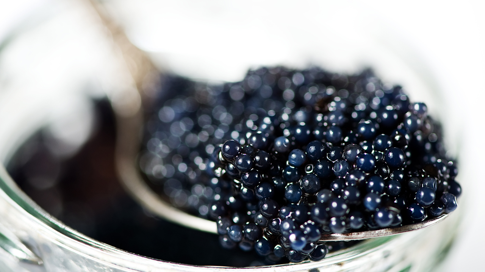

La verdad sobre el caviar
¿Cómo lograron ponerse de moda las huevas de esturión?
El esturión es un pez extraordinario, cartilaginoso, resabio de la era jurásica, que provee las huevas de pescado que denominamos caviar, uno de los artículos culinarios más suntuarios que se conoce. Estos animales provienen del Mar Caspio y su deliciosa simiente puede llegar a costar cifras astronómicas. Durante mucho tiempo, fue un alimento propio del vulgo. Incluso el mismo Luis XIV, quien recibió de obsequio una muestra de manos del embajador de Pedro el Grande, zar de todas las Rusias, ni bien se lo llevó a la boca lo escupió asqueado. A pesar de ese acto fallido, fue introducido en Francia en la década de 1920 por dos hermanos rusos, Melkom y Mougcheg Petrossian, cuyo asombro fue indescriptible al comprobar que ese manjar no se conocía en París, epicentro gastronómico del orbe. Además, en esa época, luego de la Revolución Bolchevique de 1917, todo lo que tuviera que ver con Rusia causaba furor. Aún así, cuando los hermanos Petrossian organizaron una cata de caviar durante la Exposición Universal de 1925, realizada en París, los organizadores les recomedaron que dispusieran escupideras en previsión a las posibles reacciones del público. Pero al final el caviar “entró por la puerta grande” y se afirmó como uno de los fetiches de la alta gastronomía. Actualmente está considerado un producto exquisito y no hay “paladar negro” que se le resista. De las 27 especies de esturión que existen, cuatro de ellas son cultivables y dan un caviar según sea la especie del cual procede. Estas son Beluga, Osetra, Sevruga y Siberiano. Pero lo que mucha gente entiende por caviar, esas latitas o envases de vidrio que son moneda corriente en las góndolas del supermercado, son huevas de otros peces como el salmón Keta o el Lumpo, que nada tienen que ver con el auténtico. El caviar tiene un sabor muy sutil pero que dura en el paladar; sus huevas, cuyo tamaño oscila entre los 2 y 3 milímetros, son de consistencia firme y comprenden una gama de colores que van desde el negro azulado hasta el gris plateado. Además es cremoso y casi no huele a pescado, con un dejo a frutos secos. Si bien existen varias formas de comerlo, los connaisseurs lo consumen frío en un recipiente de cristal sobre hielo y se come solo, de un bocado con una cuchara de nácar (aunque algunos utilizan de plata), con un huevo de codorniz, en blinis con crema agria o como parte de un plato más elaborado. Eso sí, como se dijo al comienzo de la nota, no es para cualquiera porque un kilo de este producto (hay que ver el tipo y la calidad), puede costar alrededor de 4.500 dólares.